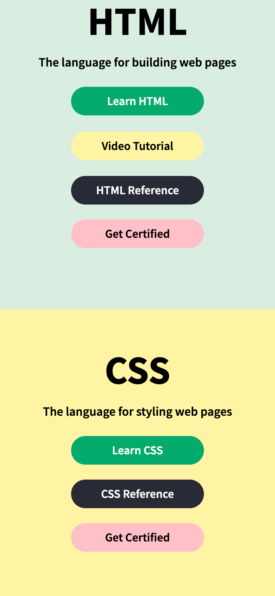
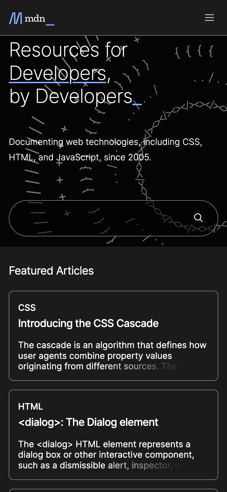
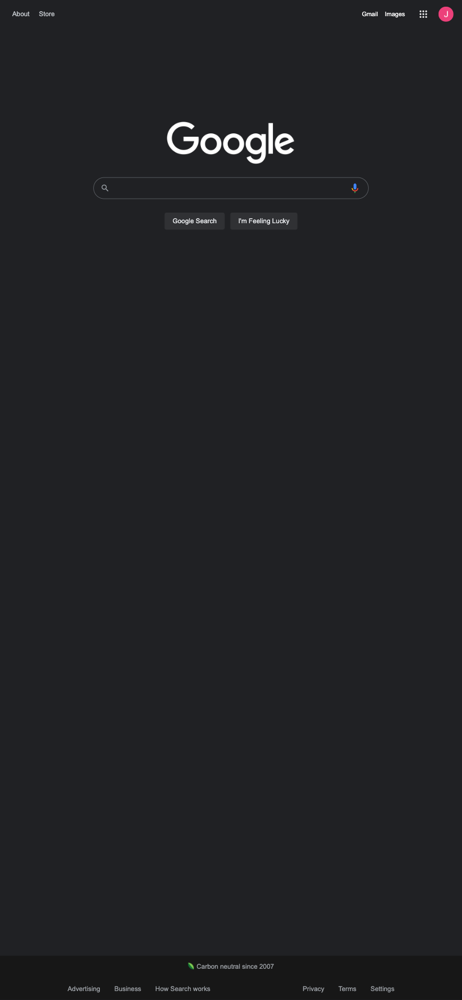

Repetition
https://www.w3schools.com/default.asp W3Schools is a great website to display repetition as they are very consistent with their color scheme, font, and buttons. This screenshot displays how not only are the fonts and button shape the same but the colors for each button repeat with intention. Through their repetition of colors on buttons the user is able to see that if they want to see a reference they need to click black, if they want to get certified to click pink and so on. These are ques that people pick up on unconsciously but make the user experience that much greater.
Alignment
https://developer.mozilla.org/en-US/ MDM displays several design principles. Alignment, however, stands out the most. It has a crisp left alignment that goes down the whole page making the eye easily travel through the information. This keeps the whole page unified as if there were an invisible line keeping it all together.
White Space
https://www.google.com/ Google’s home screen perfectly displays White Space and Clean Design. Its main function, the search bar, is placed front and center with plenty of whitespace around to direct the user’s eye. While there are many other things you can do on the homepage, such as access your Gmail account and other google apps quickly, this does not take away from the main application or burry you in information. The white space creates a sleek look that is user friendly.